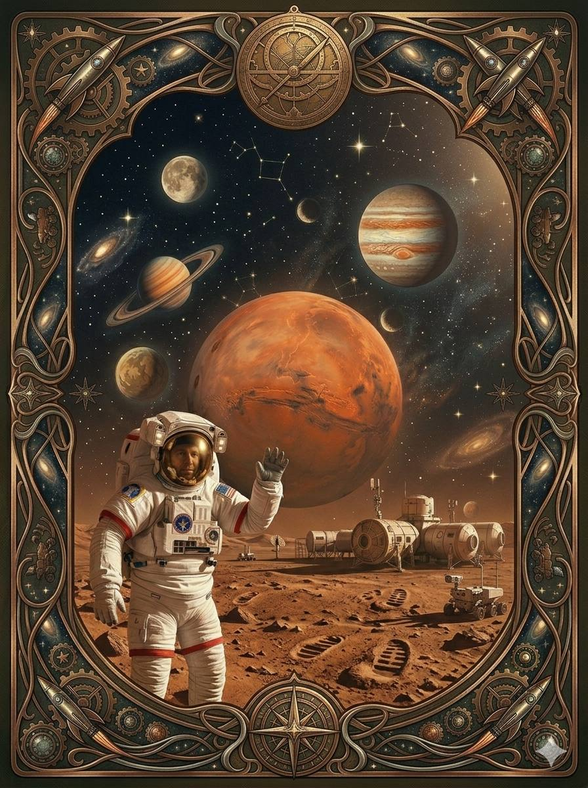
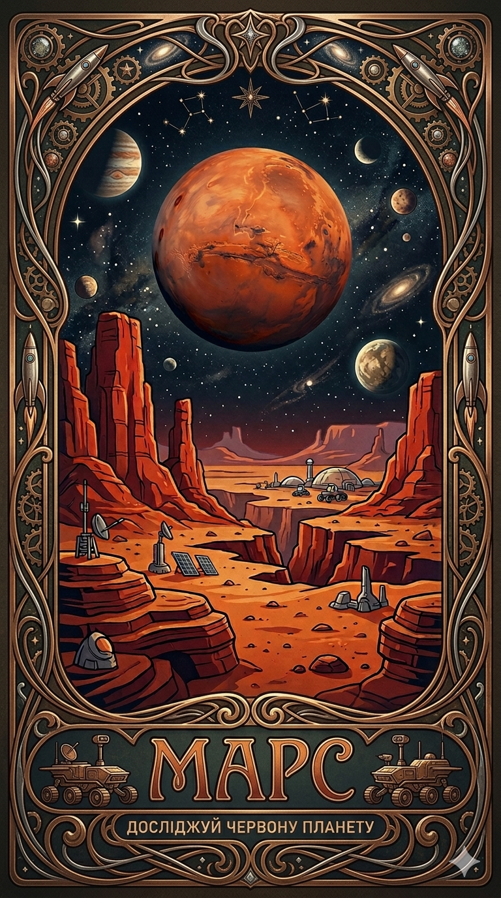

Перевірь, наскільки добре ти знаєш Марс!
Поглиблюй свої знання під час гри🌟


Уявіть собі старий велосипед, який залишили під дощем — він вкривається рудою іржею. З Марсом сталося майже те саме! На його поверхні дуже багато заліза. Колись давно воно змішалося з киснем, і вся планета буквально «заіржавіла». Тому вона така червона, а марсіанський пил схожий на пудру з іржі.
На Марсі рік триває набагато довше, ніж на Землі. Поки Земля оббігає навколо Сонця один раз, Марс встигає пройти лише половину свого шляху. Тому, якби ви жили на Марсі, свій день народження ви б святкували лише раз на два роки! Зате канікули могли б бути вдвічі довшими.
На Марсі є гора, яка називається Олімп. Вона настільки велика, що на її верхівці можна було б поставити три Еверести один на одного! Але найцікавіше те, що Олімп дуже пологий. Якби ви піднімалися на нього, ви б навіть не помітили, що йдете вгору — здавалося б, що це просто нескінченна рівнина, яка веде до самих зірок.
На Марсі живуть лише роботи. Один із них, марсохід Curiosity (що означає «Допитливість»), дуже сумував за Землею. У 2013 році, щоб розважити себе, він за допомогою своїх внутрішніх двигунів «проспівав» сам собі пісеньку «Happy Birthday to You». Це було перше і єдине святкування дня народження на іншій планеті!
Ми звикли, що вдень небо блакитне, а на заході сонця воно стає червоним. На Марсі все навпаки! Вдень небо там рожево-бежеве через пил, а от коли сонце сідає за горизонт, простір навколо нього стає яскраво-блакитним. Це виглядає як справжня інопланетна казка.
На Марсі ви могли б стрибати дуже високо! Через слабку гравітацію ви б відчули себе справжнім супергероєм: один легкий стрибок — і ви вже на даху будинку.